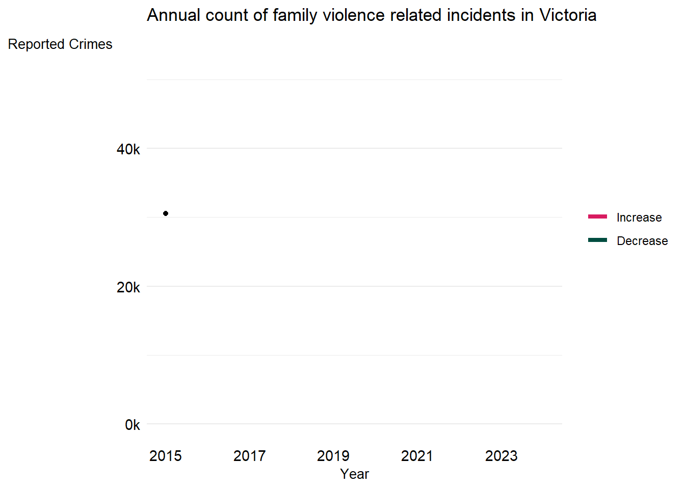
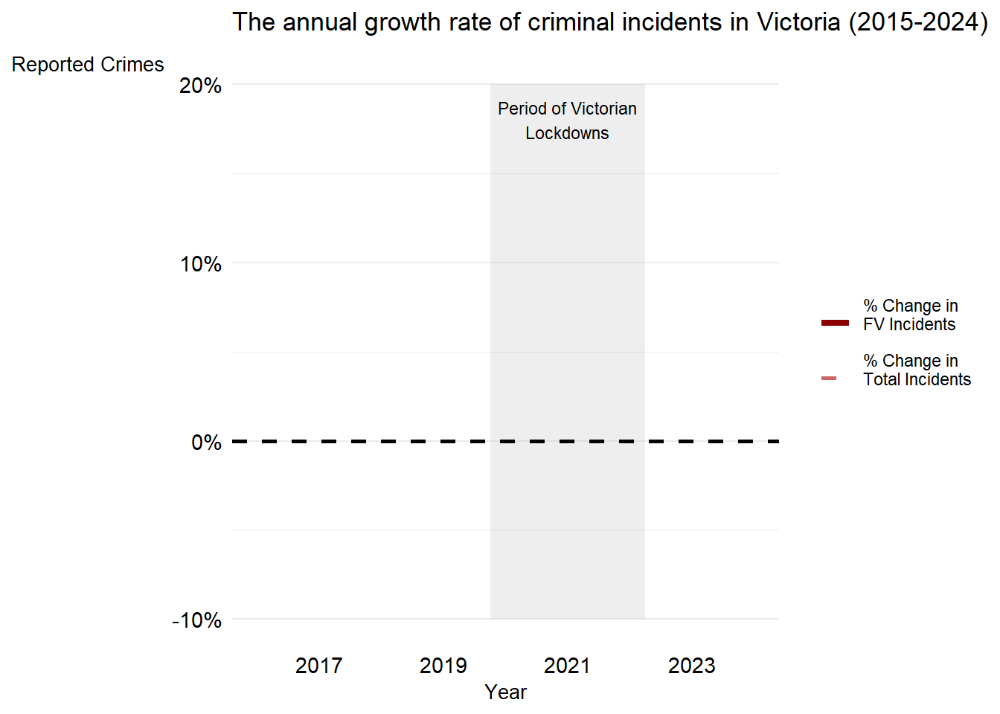
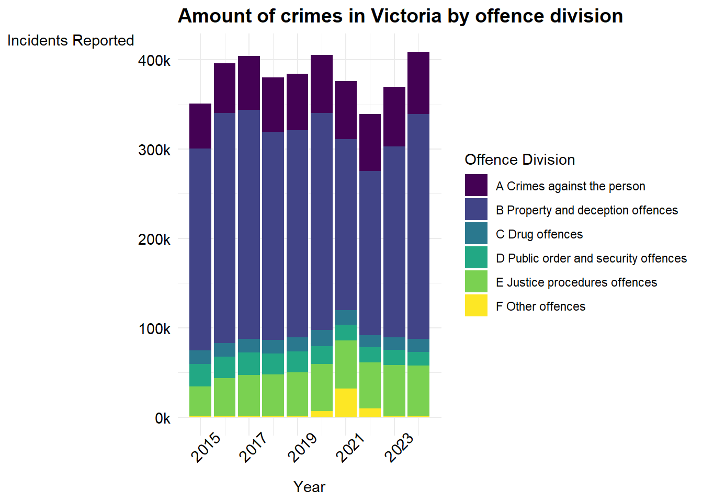
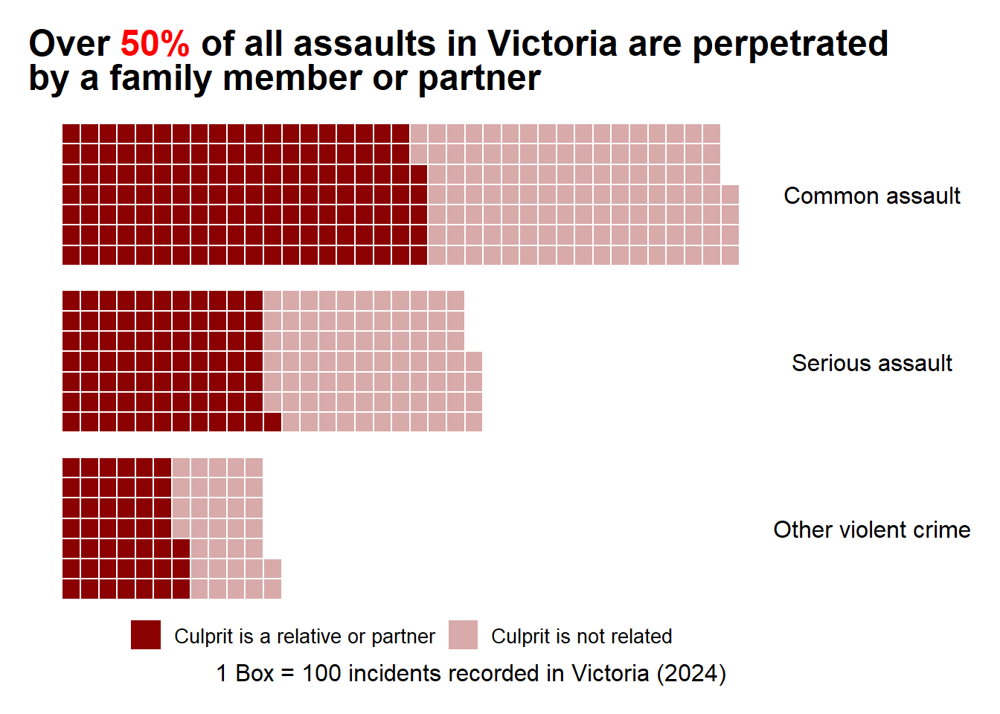
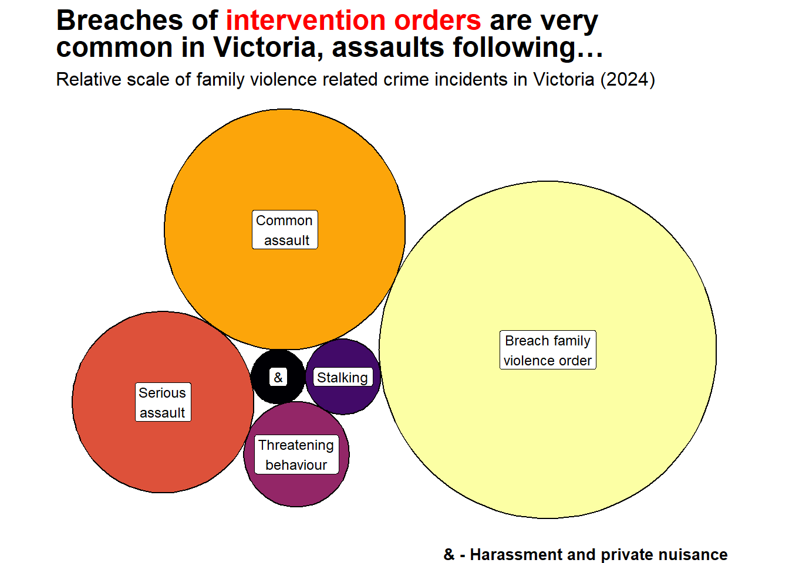
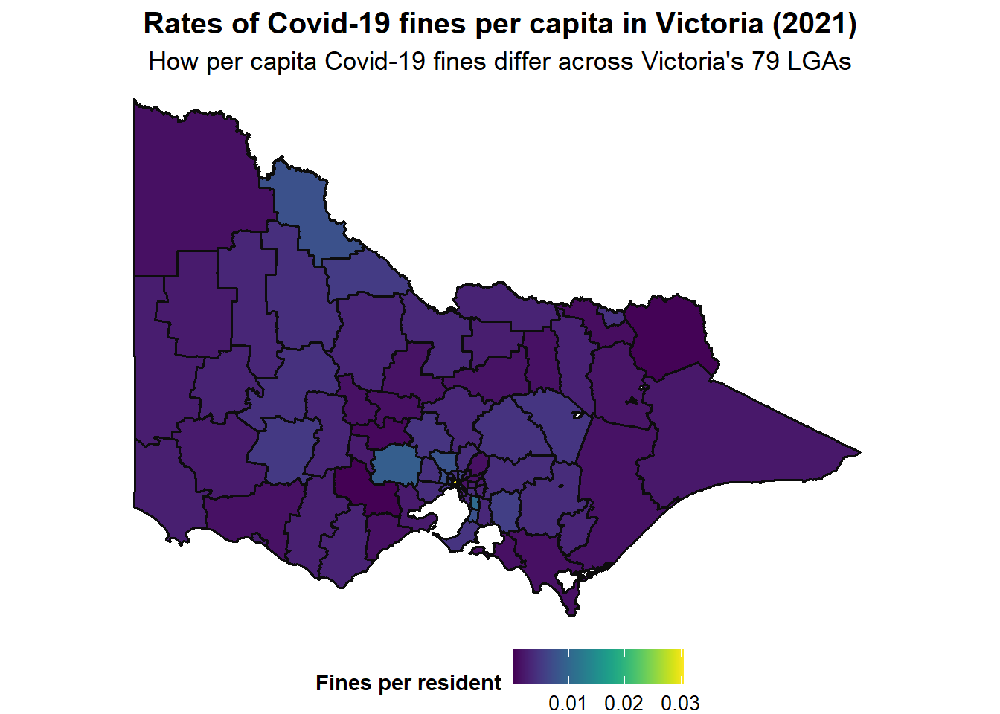
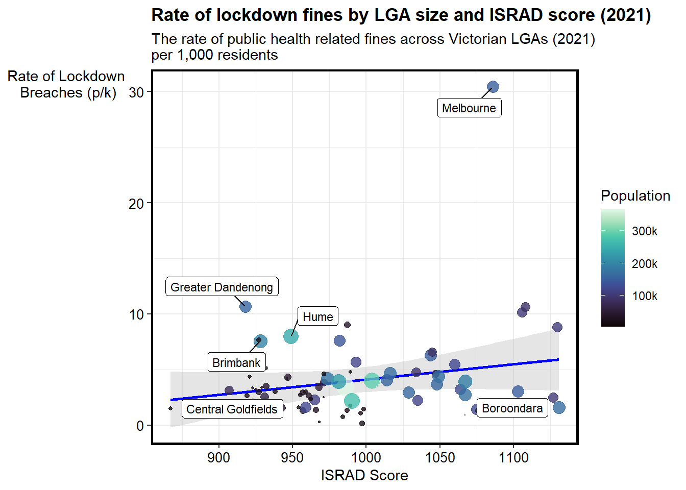

Debates surrounding crime and policing have come to dominate the national spotlight in Australia over the past few years
Victoria’s Covid-19 lockdown laws have attracted the criticism of many social science and legal experts…
Meanwhile, many feel that not enough is being done to combat the epidemic of family violence and violence against women in Australia
Let’s explore these two issues through the data
Family violence has been on the rise in Victoria for several years now
In fact, in the past ten years, family violence incidents have only fallen twice year-on-year!
This trend has been sustainted even when crime has fallen in Victoria
Notice the negative crime growth rate during the Covid-19 lockdown years
Meanwhile growth in family violence incidents have remained higher than the overall growth in crime
To get a better grasp of things, let’s have a look at which crimes fall under the definition of family violence
Victoria has 6 divisions of crimes, each with dozens and dozens of subdivisions and subgroups….
….The most common criminal activity in Victoria are property and deception related offences, or, put simply, “theft”.
Of particular interest to us is category “A: Crimes against the person”…
…This division entails violent and aggressive crimes like assault, harassment and stalking…
You may notice that Division F increased significantly during the Covid-19 lockdowns when most other categories of crime fell. We will come back to this category in a bit…
For now, let us focus on Division A
You may question how many incidents of violent crime in Victoria relate to family violence…
…In our database, assaults and violent crime are divided by its relation to family violence (FV). For instance, we have non-FV violent crimes and FV related violent crimes…
As it turns out, an astounding 51%+ of all assaults and violent crime is perpetrated by a close family member or partner in Victoria
In terms of serious assaults, that is almost 7,700 incidents in 2024 alone or the equivalent of 21 serious assaults a day!
Serious assaults are violent incidents that lead to severe and permanent life threatening injuries
Notwithstanding, a plurality of family violence related crimes are not assault related
Many relate to breaches of intervention orders, of which 27,000 incidents were recorded in Victoria in the year 2024
As alluded to earlier, family violence is not the only criminal issue that has captivated the Australian public
Debates surrounding the impact, legality and ethics of Victoria’s harsh lock down laws continue to rage on…
As early as 2020, experts warned of the risk of racial profiling and an exacerbation of economic inequalities due to the implementation of Covid-19 laws
In 2023, the ABC published an analysis of data retrieved by a Victorian Police Freedom of Information (FOI) request
Their analysis found that around 20% of Covid-19 fines were issued to individuals from Middle Eastern and African descent
According to commentary on the data, this is mostly due to over-policing in low socio-economic areas, as reflected by a higher rate of fines being issued when a police offer is present
To interrogate this issue further, we can begin by looking at how crime rates differ across local government areas as a proxy for local communities
As mentioned earlier, Division F crimes rose significantly during the pandemic
This is mostly due to the liberal issuing of Covid-19 fines, under the criminal subcategory of F92 Public health and safety offences
Let us have a look at how these fines were issued across location
For the most part, rural Victoria recorded very few public health offences, both as a rate and raw amount
This is likely due to the laxer isolation and social distancing laws that were put in place outside of Melbourne, but may also be due to under-policing
Zooming into Melbourne, we see that the CBD and some of the Northern and Eastern Suburbs have a higher than average offence rate
Brimbank and Hume have some of the highest rates of breaches, whilst being Victoria’s second and sixth most multicultural LGA respectively
Nevertheless, Melbourne’s wealthy inner-East also seems to have an above average violation rate, muddying the picture
To get a better idea of whether or not a relationship exists, we can use the Australian Bureau of Statistics Socio-Economic Indexes for Areas (SEIFA) dataset
This dataset aims to measure how advantaged or disadvantaged a local government area is
It does so by giving a score to each local-government-area, with a higher score indicated greater socio-economic advantage
This score is known as the “Index of Relative Socio-Economic Advantage and Disadvantage” Or IRSAD for short
Plotting the rate of Covid fines against the ISRAD score yields a fascinating result…
In terms of overall trends, wealthier and more advantaged suburbs tend to recieve more fines as a percentage of the population
Indeed, Victoria’s least advantaged LGA of Central Goldfields has a lower rate of Covid fines than Victoria’s most advantage LGA of Borondoora
Nontheless, Victoria’s most multi-cultural LGAs of Hume, Greater Dandenong and Brimbank all have significantly higher rates of fines relative to their peers of equivalent ISRAD level
This suggests that racial profiling may indeed play a role, although of course we would need more granual data to be certain
So to summarise, we have discussed how incidents of family violence are on the rise, as well as how they have been recorded…
…We have also explored how racial profiling may have played a role in the overrepresentation of Covid-19 related fines in Victoria’s lockdown
I hope this was useful
The End.








